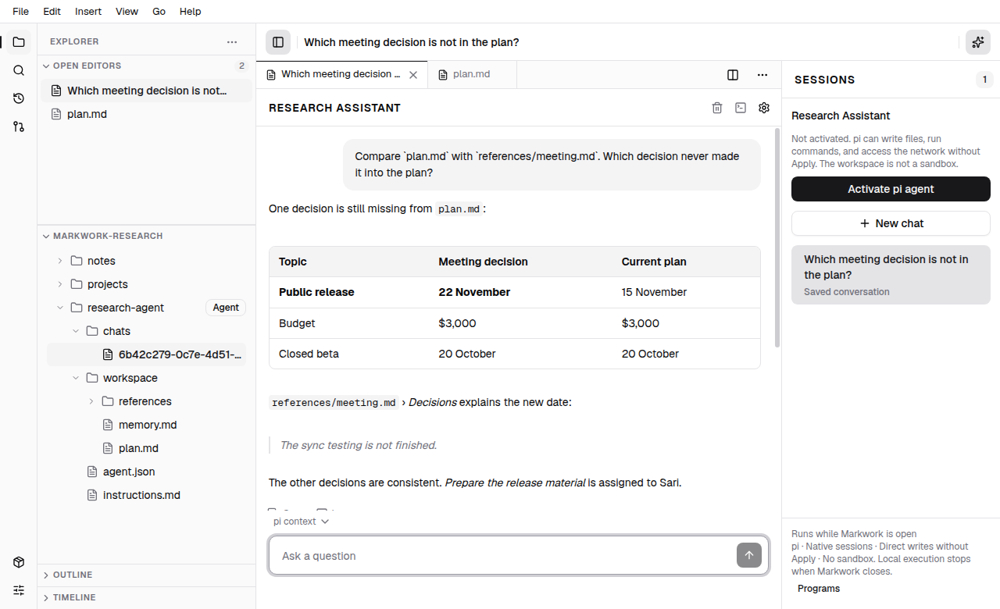
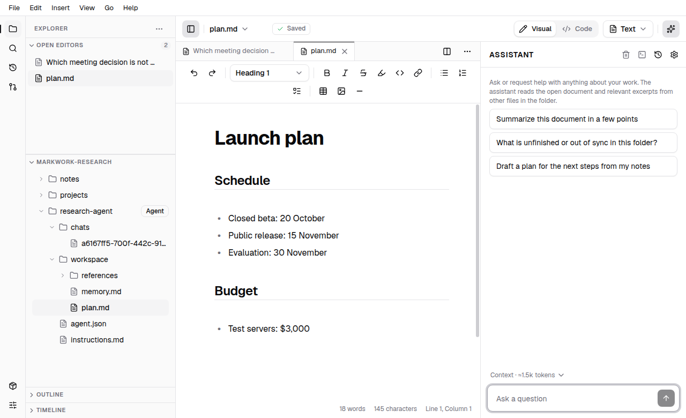

Agent
Agent folders
A persistent pi agent with editable instructions, a shared workspace and memory, and independent conversations beside your documents.
Agent Folder chat uses pi 1.4.0, not the built-in Assistant engine. Pi owns authentication, providers, the model loop, tools, native history, context and compaction. Markwork owns identity, tabs, the session list, queues and process lifecycle. The workspace Assistant now shares this pi execution adapter with its own workspace-root cwd and private native sessions. Card/worktree review before merge is unchanged.
Create or open an agent
Choose File → New Agent…, the command palette, or New Agent… (in workspace agents/) in Explorer. Regardless of the selected folder, creation always goes directly into <workspace-root>/agents/<name>/. Existing files, collisions, symbolic links and nesting are refused. When the opened root is itself an agent, New Agent is unavailable; open an ordinary workspace to create another one.
agents/research-agent/
├── agent.json
├── instructions.md
├── workspace/ # pi's working directory; files and shared memory
└── chats/ # readable projections, ignored by Git
You can open an existing agent directly, or select it in a larger workspace. Its exact root marker uses the new format:
{
"version": 2,
"id": "86fd0cd4-bc30-41b5-a877-43f9284345b6",
"runtime": "pi",
"name": "Research Assistant",
"instructions": "instructions.md"
}The stable UUID identifies the agent independently of its name. Optional description is supported; unknown fields and executable hooks are rejected. The Markdown instructions and workspace/ must exist. Invalid or missing configuration never starts a model. Version-1 agents and their transcripts are not migrated, adopted or executed; their files are not deleted. Do not copy an existing agent's UUID into another folder: create a new identity instead.
Activate explicitly: trusted local use only
Install exactly pi 1.4.0 on the execution machine and authenticate through pi using a terminal. Agent Folders do not copy or use the ordinary Assistant's API key. Select Activate pi agent in Sessions and accept the notice before sending. Opening a folder, opening a chat or editing instructions alone does not execute pi. Activation is not remembered across application restarts or workspace switches.
No sandbox. No per-tool Apply. Pi runs with your account's permissions. File changes, shell commands and network requests happen directly. workspace/ is the working directory, not an enforced access boundary: tools can reach other files, configuration, transcripts, account-readable secrets, localhost and private services. Data can leave through the provider or tools. Internet text can contain prompt injection. Avoid sensitive data and use version control or backups; editor Undo cannot reverse arbitrary commands, deletions or network effects.
Extensions, MCP, skills, prompt templates, themes and automatic context-file discovery are disabled for this launch. Built-in read, bash, edit and write remain available. These launch choices are not filesystem or network isolation. No code is automatically installed on a folder's request.
Chat and documents together

The Explorer stays on the left; chats and normal Markdown documents share the tab strip. A document retains its normal save state and undo history. Focusing a chat shows Sessions on the right; focusing a document shows the ordinary Assistant. Long history scrolls within the conversation while the composer and window chrome remain visible, including narrow windows and split panes. New output does not pull you away from earlier messages you are reading. Chat renders headings, inline styles, numbered/bulleted lists, task markers, quotes, fenced code and GFM tables with aligned columns; wide tables scroll inside the message. Raw HTML is escaped and remote images do not load automatically.

Independent native sessions
- New chat creates a separate native session, sharing instructions and workspace memory, not another chat's entire conversation.
- Session rows focus or reopen the same tab. Switching or closing a chat tab does not stop its work or delete its history.
- Only one turn runs per agent. Requests from other sessions queue; different agents have separate slots. A queued session's Stop cancels that queued request.
- Stop clears pi's queued input and aborts the active session. It does not undo completed operations or guarantee that intentionally detached programs terminate.
- Streaming text, tool calls, results and errors stay attached to their originating chat. Logs are bounded and known credential fields are redacted; arbitrary output may still disclose secrets.
Native pi sessions and exact chat/session bindings live in durable application data under markwork/folder-agents/<agent-id>/, not in the portable workspace or a cache. Each turn resumes the exact bound native file; it never implicitly resumes the latest session. Model and thinking options use pi's available models and authentication.
chats/<chat-id>.md is only a readable projection with layout: chat. Only indexed new-format chats route to a chat tab. Unbound or old Markdown remains an ordinary document, not executable history. Edited projections cannot inject conversation state or trusted approvals. Restore native session explicitly rebuilds a projection from native history without resending a prompt or replaying tools; it is required after interrupted/unknown outcomes. Session deletion is not implemented.
Instructions, memory and research
Edit instructions.md as a normal document. Before a turn starts, its saved revision is captured in an immutable SHA-256 snapshot and appended to pi's system instructions. A fresh local RPC process resumes the same native session per turn, so changed instructions replace the previous active prefix without duplicating it. Changes during a running turn apply to the next turn. Application-managed turn provenance records the chat, native file and instruction revision for each attempted turn, without copying prompt text or credentials; it does not authorize replay.
Ask pi to keep useful facts in workspace/memory.md or a curated memory directory. Memory is ordinary agent-maintained content shared between sessions, not an automatic concatenation of all files and chats. Research can use installed shell programs such as curl and Python; shell access does not supply a search engine or browser. Ask for source URLs, access dates, supporting evidence and uncertainty in reports. Missing programs, credentials or provider failures are shown as failures, not silently replaced with the Assistant.
External changes and unsaved drafts
Explorer and clean open documents refresh after pi's tool/disk changes. Loaded agent subfolders refresh too, even when filesystem watches are unavailable. New or updated output files under workspace/ automatically expand their parent folders, including nested output directories, without opening a file or changing the selected tab/tree row. This uses metadata, never file contents or a guessed path from shell output. Automatic discovery skips symbolic links, hidden folders and node_modules, and stops beyond 1,000 entries or eight nested directory levels; use ordinary tree navigation for larger workspaces. A dirty editor buffer is never silently replaced. If disk and draft diverge, Sessions shows Disk conflicts and saving that document is paused. Use disk version explicitly discards the unsaved draft; Keep draft for saving explicitly allows the draft to overwrite disk on Save/autosave. Both ask for confirmation. Save a copy if you need both versions. Avoid editing the same files while pi works: native shell writes do not honor an editor lock.
Local lifecycle and recovery limits
Local execution runs while Markwork is open. On Linux, activate the agent and choose Use background pi to select configured local markworkd instead. This is explicit: unavailable background execution never falls back to local execution or the old custom worker. Pi must be installed as the daemon’s allowed pi program, and its workspace must be allowed as a working directory. Authenticate pi 1.4.0 in that account; the Assistant’s credentials are never forwarded. Version and authentication are checked before each new prompt. These checks do not test provider connectivity or enforce a sandbox.
Closing Markwork or switching workspaces asks about active work. Keep Them Going detaches background runs; local runs stop and unsubmitted queued messages remain saved drafts, never an automatic background queue. Closing a chat tab alone does not stop work. Reopening the workspace reattaches registered runs without resending their prompts; no new model work starts merely by opening a folder. Completed background pi may remain idle until Markwork reconnects and closes its RPC process.
Reconnect original run observes the same run. If it is lost, ended, missing, or its startup outcome is unknown, inspect the result and use Stop original run where necessary (also available when streaming observation failed), then explicitly Restore native session. Recovery reads native history and does not rerun prompts or tools. An unreachable daemon never counts as proof that a run stopped. A stale runtime owner after an application crash requires manual inspection and removal of the runtime owner/ directory only after confirming its window is gone; never remove a live owner. Runtime drafts and daemon logs may contain conversation/tool text in plaintext under your account. Back them up and protect them like native history.
A runtime owner directory refuses competing writers from another window. After an application crash, inspect the native session and any surviving process, then remove the stale runtime owner/ directory before explicit recovery. Never remove a live owner's directory. Unknown outcomes are not automatically resent. This is fail-closed local ownership, not a multi-machine lease or a crash-proof process supervisor.
Example workspace
Run npm start -- example and select research-agent, or open example/research-agent directly. Configure pi, accept activation and compare the plan and meeting notes inside workspace/. The example ships without fabricated native history. See runtime limitations before relying on it.